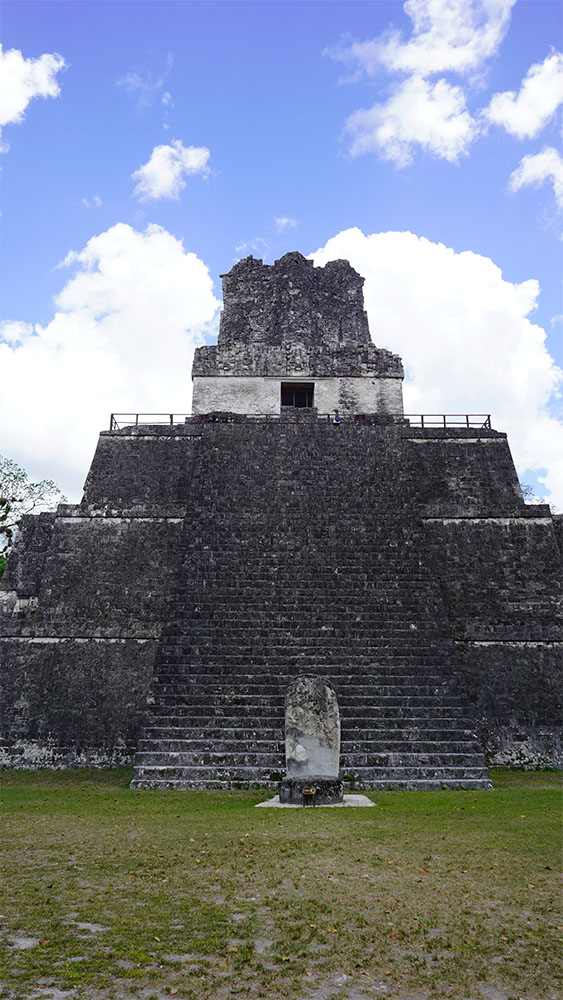

Hover over the images to reduce the blur, reducing the blur being metaphorical for attempting to remember an old memory. When finished, click on page 2 to continue.

Hover over the images to reduce the blur, reducing the blur being metaphorical for attempting to remember an old memory. When finished, click on page 2 to continue.

In this portion of the project, you must hover over the temple in order for it to bestow its tales of knowledge upon you!